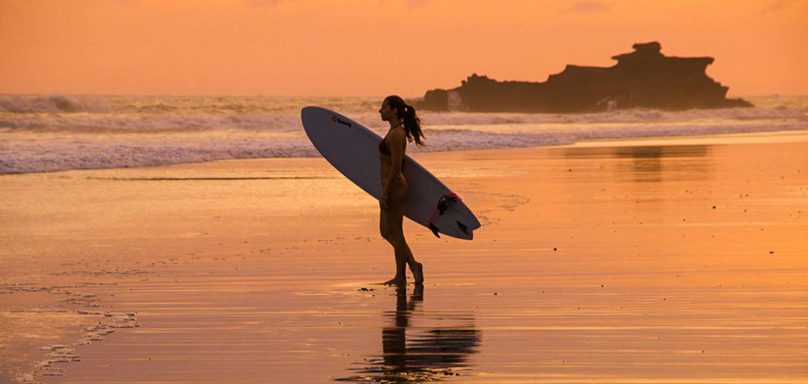

Bali is known for its jungled volcanic mountains, iconic rice paddies, beaches, coral reefs, surf and Hindu
culture. Now a Mecca for tourism and travelling surfers the Hindu culture has not been lost and still
remains prevalent throughout the island of the gods today. It’s not only the vast range of reef breaks that
are spread along the coastline of Bali that makes it so special but the incredibly patient, accepting and
tolerable Balinese people that greet millions of foreign visitors in search of Bali surf every year.
Travellers, surfers and expats see the island as a truly magical place. Most cannot bear to leave and make
it their home. As for the unlucky ones forced back to reality, they are drawn back year after year in search
of the next surfing odyssey, chasing the swell of their dreams. It really is no wonder that so many people
travel to Bali in search of the ultimate surfing adventure, wave perfection and pumping barrels.
Surfing in Bali is most commonly known for its perfect barreling left-hand reef breaks, however, there is
also a vast range of world-class right-hand reef breaks. The long list of famous surf spots means no
shortage of waves for experienced surfers. There is also plenty of mellower surf spots for intermediate
surfers and beach break options for beginner surfers.
If you’re planning on coming to Bali on a surf trip then this is the most up to date and in-depth surf guide
for not only you but anyone else that may be coming to lap up the best beaches in Bali rather than surfing.
Learn all the tips you need to surf Bali such as where to stay at each surf break, what the waves are like,
how to get there, how to get in and out of the surf at each spot and much much more.